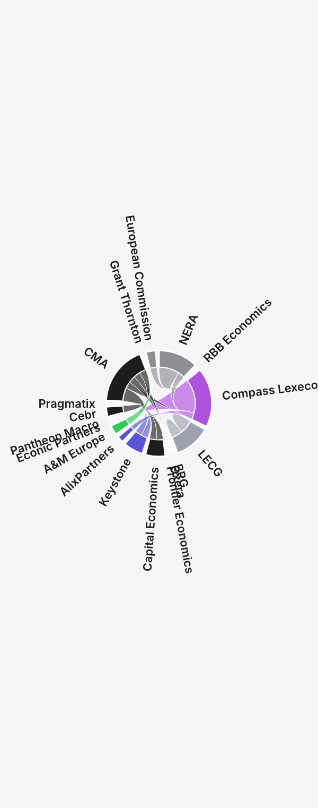

A sourced chord diagram maps around 30 senior moves across UK economics consultancies in 2000–2026. It shows the market’s visible upper layer—not every career move.
Britain’s competition consultancies may employ only a thousand senior economists. This map covers the visible senior layer, not every career move. Over 25 years, people have orbited three or four central firms, passed through regulators and occasionally broken away to redraw the market.
The chart uses the project ledger’s documented senior moves between firms. Each ribbon represents one person or group event. Its width reflects seniority: partners outweigh directors, who outweigh principal economists. Hover over a ribbon for the person, event and year.

Five features stand out before the arithmetic begins.
The widest arc runs from Compass Lexecon to Econic Partners. The ledger and Econic’s profiles identify Jonathan Orszag, Mark Israel, Kirsten Edwards-Warren and Enrique Andreu. Andreu’s profile says he spent more than 10 years at Compass and led its Brussels office. Part 5 gives the details. Here the exodus is simply the largest documented single senior-move event in the dataset.
Keystone has two inbound ribbons carrying three arrivals: Coscelli and Hunt from the CMA, and Calanchi from Compass Lexecon. Two outbound ribbons carry Calanchi to Econic and Hunt to AlixPartners. Caffarra’s move to UCL falls outside this consultancy network. In two and a half years Keystone built a European leadership group, then lost much of it. Coscelli is the remaining leadership name in the charted set.
Arrows leave the CMA for Keystone, Oxera, Frontier and AlixPartners; almost none arrive. Part 6 calls this the regulator-as-recruiter effect. The public record shows no offsetting group of consultancy partners entering the CMA during the same period. The chart proves the senior departures. It cannot see every internal promotion or junior hire at the regulator.
Rameet Sangha’s 2020 move from AlixPartners, where she was a director, to Compass Lexecon runs against the 2024–25 AlixPartners build. Five years before hiring former CMA economists to establish a competition practice, AlixPartners lost a senior director to Compass. That is a clue about market structure, not proof of strategy. Its visible position in 2025 differs sharply from the one implied by Sangha’s 2020 move.
Frontier is the chart’s cleanest node, with few mid-career arrivals or departures. Mike Walker’s move from the CMA, effective 5 January 2026, is one of the few inbound arrows in a quarter-century.
Employee ownership could help explain the stability, but the chart cannot prove it. Frontier distributes profit among staff rather than a small partner class; sharing the proceeds may reduce the urge to leave. Its Part 5 story looks unlike those of Baringa or Compass Lexecon.
Ranking firms by the seniority-weighted arcs touching each node—inbound and outbound, with the same partner/director/principal weights—produces this top ten:
| Rank | Firm | Weighted arcs in | Weighted arcs out | Total |
|---|---|---|---|---|
| 1 | Compass Lexecon (FTI) | 14 | 18 | 32 |
| 2 | CMA (regulator) | 0 | 18 | 18 |
| 3 | Econic Partners | 18 | 0 | 18 |
| 4 | Keystone Strategy | 9 | 6 | 15 |
| 5 | NERA UK | 0 | 12 | 12 |
| 6 | RBB Economics | 12 | 0 | 12 |
| 7 | LECG | 0 | 11 | 11 |
| 8 | AlixPartners UK | 6 | 2 | 8 |
| 9 | Pragmatix Advisory | 6 | 0 | 6 |
| 10 | Capital Economics | 0 | 6 | 6 |
Three points follow. First, Compass Lexecon is the network’s hub, with the largest total weighted flow. Second, RBB is an anomaly rather than a normal high-churn node. Its founding 2002 NERA spinout contributes nine inbound points. Only one later senior move touches it on the chart: Benoît Durand’s arrival from the European Commission’s competition side in 2008. Helder Vasconcelos joined RBB as a partner from Compass Lexecon in April 2025, but is not weighted here.
The project found no post-founding RBB partner who left to create a rival, nor a charted partner-level poach from the firm. RBB therefore has the lowest visible post-founding churn among this top ten. Third, Frontier sits close behind. Its only weighted inbound arc is Mike Walker’s move from the CMA, worth 3—again among the lowest churn of any major node.
The two lowest-churn firms also have unusual economic models. RBB runs a small closed partnership; Frontier is employee-owned. Ownership may help explain their stability. The chart cannot establish causation.
Four people sit near the network’s centre. Their recorded moves and leadership roles clarify much of the story since 2020.
Hunt has two arcs across three organisations: CMA to Keystone, then Keystone to AlixPartners. By December 2025 his destination was AlixPartners UK LLP. Few people in the project moved twice in three years with each move becoming a story of its own.
Published profiles trace Calanchi from Whitehall and the competition authorities through Compass Lexecon and Keystone Europe to Econic Partners. No individual follows a longer path on the chart. His career is the market’s porousness in miniature.
Padilla has one arc between firms and one later leadership marker. In 2011, after LECG’s bankruptcy, his European team moved together to Compass Lexecon. His elevation from partner to chair in 2024 is internal, so it produces no arc. It still matters: he held formal European leadership as the largest Compass breakaway formed around him. Much of the firm’s story in this series runs through his tenure.
Edwards-Warren has one cross-firm arc and one leadership marker, a year apart. Compass Lexecon named her co-head of EMEA in February 2024. A year later she left with Orszag and Israel to co-found Econic Partners. Alongside Orszag, she is the second statutory director of Econic U.K. Limited. That position makes her central to the exodus, dated December 2024 and made public in February 2025.
How the series was built in 60 hours with Claude Code, the Companies House API and no prior programming experience: the firm list, tools, failures and existing research.
Read the Methodology →